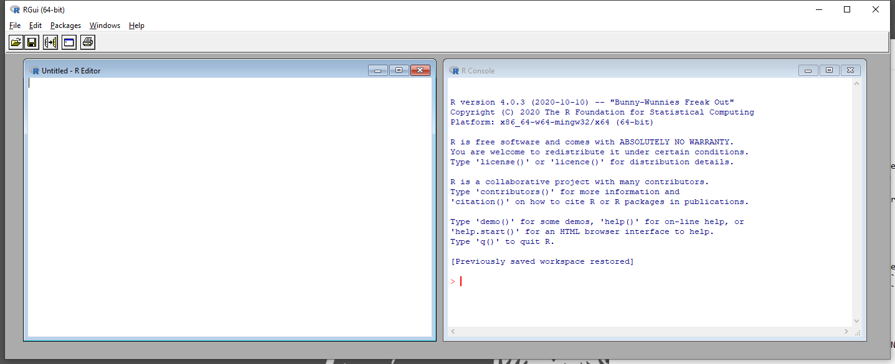
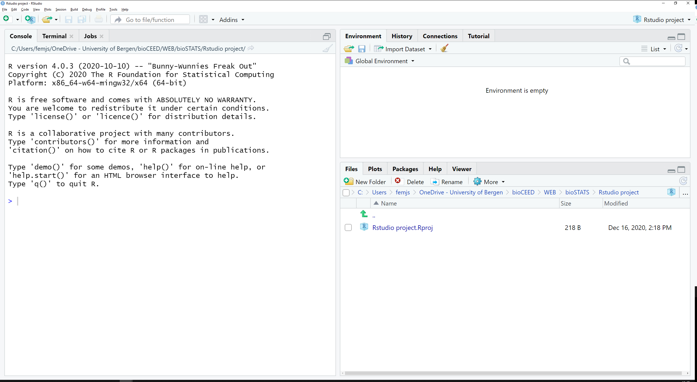
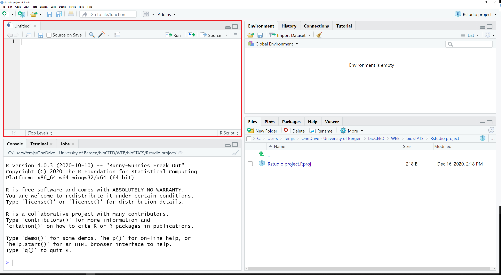
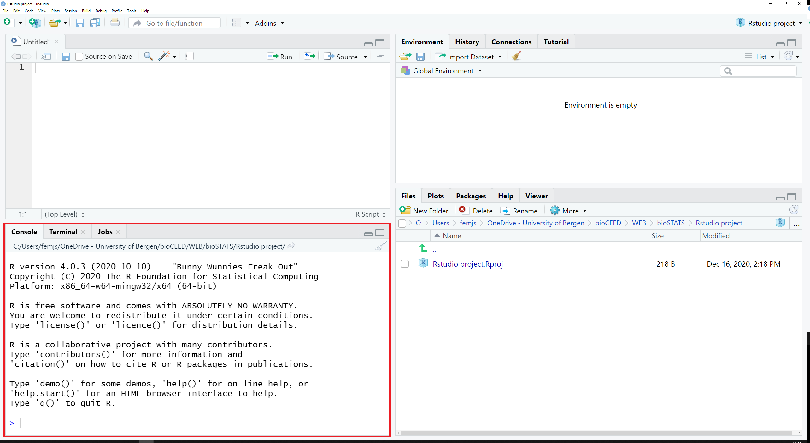
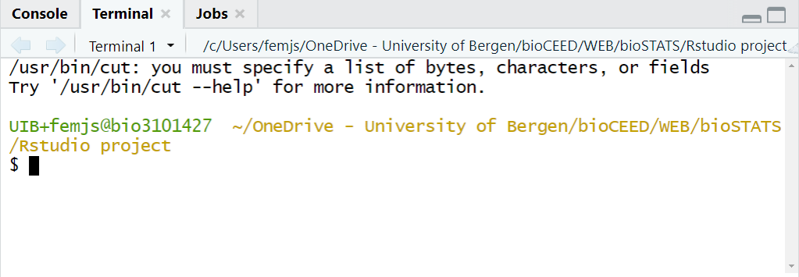
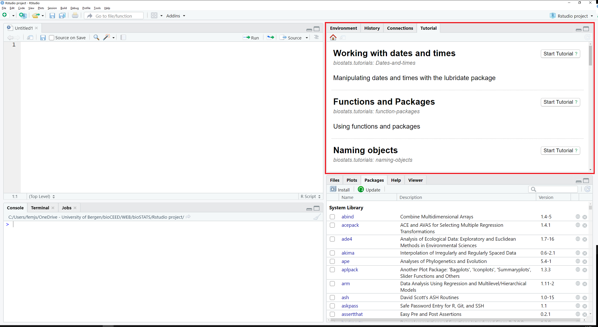
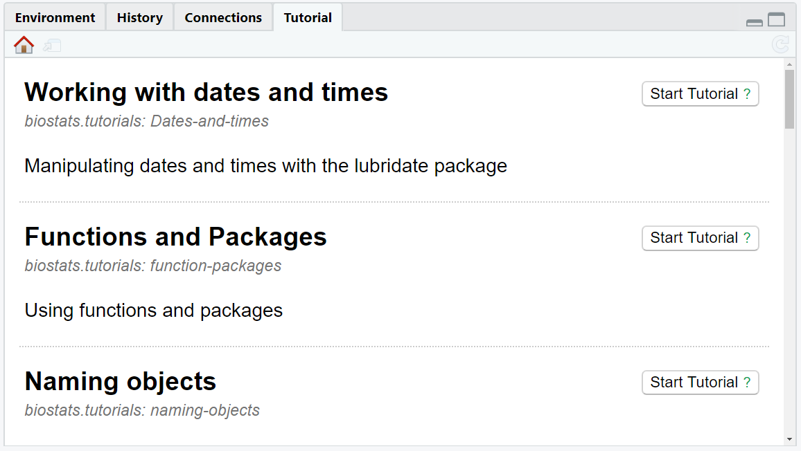

2 Installing and configuring R and RStudio
In this chapter, you will
- learn why we use the RStudio integrated development environment for working with R
- install R and RStudio
- find your way around RStudio
- configure RStudio
If you already have R and RStudio installed, check they are the required version (or more recent)
2.1 Working in R via RStudio
R comes with its own Graphical User Interface (GUI; Figure 2.1). Nearly everything in R happens either in the script editor (R editor - Figure 2.1, left window) where the user writes code, or in the console (R console - Figure 2.1, right window) which runs commands and prints results.
It is a minimalist GUI that does not offer much more than a short main menu and five buttons in total. This is the engine that will do all your analyses, but you will rarely, if ever, use it directly.
Instead, you will use a more user-friendly interface, such as RStudio.
2.1.1 What is RStudio?
RStudio is an integrated development environment (IDE) for the R language written by posit (which used to be called RStudio). RStudio runs R “in the background”, and replaces R’s minimalist interface with its own (Figure 2.2). This means that you do not lose anything of R’s power, you simply work with it from a different perspective.

This interface is more complex and organized. The script editor (top left) is more advanced and equipped with a syntax highlighter, which will prove useful when writing code. Many functions (console, file explorer, etc) are available and dispatched in panes and tabs. A significant benefit of using RStudio is the possibility to create and manage projects. Projects let you organize your tasks and load only the files and packages that you define as necessary for the workflow.
We will further describe RStudio’s interface in Section 2.3.1 and how to set up projects in Chapter 3. For now, let’s install everything we need, starting with R and RStudio.
2.2 Installing R and RStudio
There are several ways to install R and RStudio, depending on the state of your computer.
Use this option if
- You have permission to install software on your computer (e.g. it is not a university-owned clien computer)
- Your computer is fast enough, and has enough hard disk space, to run R and RStudio (if not use the UiB virtual computer or posit.cloud)
Installing R
Go to The Comprehensive R Archive Network. In the top section “Download and Install R”, click on the link that matches your platform and follow the instructions to install the version of R designed for your OS.
Install RStudio
Go to RStudio’s website and download the free version of RStudio Desktop made for your OS. Install it on your computer.
NTNU student
NTNU students can access and download many programmes, including R and RStudio, through the apps.ntnu.no. GSo to apps.ntnu.no, search for R and RStudio and install both on your computer.
UiB students and staff can access and download R and RStudio in a virtual computer, through the Third Party Portal (apps.uib.no).
Use this option if
- You are a UiB student or staff member
- Your own computer is too old and slow (or lacks hard disk space) to run R and RStudio
- You don’t have permission to install software on your computer
Simply go to apps.uib.no, search for R and RStudio and install both on your virtual computer. You will find information about how to log on and use the Third Party Portal for the first time here in Mitt UiB.
Use this option if
- If your computer is owned by your university, and you do not have permission to install software directly.
If you have a UiB or NTNU (and many other universities) owned computer you can install pre-approved software from a Software Center. If you have a client machine but do not have access to a Software Center, you need to ask your IT-department for help installing R and RStudio (you can use posit.cloud until your computer is fixed).
The version of R or RStudio in your software center can be old (e.g. R < 4.2). If so, ask your IT-department to update them.
UiB employees
UiB employees working on a client computer should use the app “Software Center” (Windows 10) or “Managed Software Center” (Mac OS) to install R and RStudio. You will find help with programme installation here (Windows) and there (Mac OS).
NTNU employees
NTNU staff working on a client setup Windows computer should use the app “Software Center” that comes preinstalled to install R and RStudio. A description of how to find and use Software Center can be found here. Search for R and RStudio in “Applications”, and install both on your computer.
Alternatively, go to apps.ntnu.no, search for R and RStudio and install both.
posit.cloud is a web-service provided by posit which lets you run R and RStudio on their computer through a browser tab.
Use this option if
- Your own computer is too old and slow (or lacks hard disk space) to run R and RStudio
- You cannot run R and RStudio on the UiB virtual computer
- You don’t have permission to install software on your computer
- You want a zero hassle experience setting everything up
- You don’t mind paying for the service if you use it throughout the course
There is a free plan, but you will probably need a paid plan (few dollars a month) if you want to use it throughout your course. posit.cloud is not suitable for large analyses as it has limited memory.
To set up an account, go to posit.cloud
Exercise
Install R and RStudio on your laptop (or set up one of the virtual computers).
If you already have these installed, check that the R version is 4.2 or newer (run R.version.string) and the RStudio version is 2023.03.0 or newer (run rstudioapi::versionInfo()$long_version).
2.3 Starting with RStudio
Now that both R and RStudio are installed on your computer, you are ready to start. Note that you do not (usually) need to do anything to link RStudio to R or vice versa. Everything should be ready to use.
2.3.1 The interface
When opening RStudio for the first time, the following main screen (Figure 2.3)) appears:

The interface is divided into 3 panes:
- a large one to the left that contains the tabs
Console,TerminalandJobs, - a smaller one in the top right quadrant with the tabs
Environment,History,ConnectionsandTutorial, - a last one in the bottom right quadrant with the tabs
Files,Plots,Packages,HelpandViewer.
In the upcoming sections, we will see what these tabs are made for (NB: only the tabs in bold will be dealt with here).
2.3.2 Scripts
First, go to the main menu in File > New File and choose R Script. This opens a new, empty tab called Untitled1 in the top left pane (Figure 2.4).

This tab displays a script. A script is a worksheet that looks a lot like a plain text file. This is where you will write your code, edit it, correct it if necessary. It may contain just a few lines, or hundreds of them. It may also contain comments (lines starting with the symbol #) which will help you keep track of your work.
Here is a simple script:
You may open several scripts at the same time. Each of them will show up as a separate tab in the top left pane of RStudio. If the tab title is red and followed with a star *, this means that the script is not yet saved, or has been edited since the last time it was saved. Scripts may be saved at any time using .
In Chapter 4, we will talk more about working with scripts.
2.3.3 Console and Terminal
The tabs Console and Terminal are located in the bottom left pane of RStudio, along with Jobs (Figure 2.5).

2.3.3.1 The Console tab
The console is the R module that executes the commands. This is where you find the output/results of your commands providing that they can be display with symbols or characters (as opposed to graphics).
A greater-than sign > displays at the beginning of the line. This is the prompt. In the console, every command that you enter at the prompt appears in blue; the output of your commands is printed in black, and errors or warning messages appear in red (Figure 2.6).

You can actually write a simple command directly in the console and run it with Enter, but this is not good practice: one should always write code in the script and run it in the console (see Chapter 4). The exception is for code that you don’t want to run again, such as code to install a package.
If a plus sign + appears instead of >, that means that your command is incomplete (you are possibly missing a bracket or a quote mark) and R is waiting for something more. You may either complete the code, or press esc to return to the prompt.
2.3.3.2 The Terminal tab
The tab Terminal allows for manipulating files locally on your computer or remotely on a server, running Python scripts, etc (Figure 2.7).

2.3.4 Files, Plots and Packages
The tabs Files, Plots and Packages are located in the bottom right pane, along with Help and Viewer (Figure 2.8).

2.3.4.1 The Files tab
The tab Files is a file explorer that lets you navigate the folder structure of your project (for more info about projects, see Chapter 3).
When RStudio starts up in a given project, the tab Files displays by default the content of the project folder. For a new project, the only content should be able to see is a single .Rproj file. NB: We will see in Chapter 3) what the benefits to work with a project are. This is also the folder where the scripts that you create are preferentially saved and stored. Feel free to add subfolders, data files and anything else that will be relevant for your work.
At the top of the pane, you will find the following menu:

Via this menu, you can rename and/or delete the files you have checked in the list beforehand; you can also create new folders, and copy or move items to other places via the dropdown menu of the button More.
2.3.4.2 The Plots tab
The tab Plots is the place where graphic outputs that result from your code will be displayed.
Whenever a code chunk leading to a plot is run in the console, the corresponding plot appears in that tab and its size will adapt automatically to the size of the pane. When changing the dimensions of the pane, plots will be automatically refreshed to fit the new frame.
At the top of the pane, you will find the following menu:

Via this menu, you can explore all the plots that have been created (not only the latest one) with the arrows, zoom in and out, delete the current plot or all the plots. The button Export offers two options to save the currently displayed plot as a file. You may either save as image or save as pdf. In both cases, a dialog box pops up that lets you define the dimensions, target folder, file name, file type, etc.
2.3.4.3 The Packages tab
The tab Packages provides you with a list of all the R packages that are currently installed on your computer (Figure 2.11).

Each line corresponds to a specific package. The checkbox to the left indicates whether the package is currently loaded in RStudio or not, in which case any command referring to it will not perform properly. A short description of the package comes along, as well as the version of the package currently installed. Conveniently, the globe icon to the right brings you to the online information page, and the cross icon allows you to uninstall the package.
Only two items are found in the menu (Figure 2.12):
-
Install, which also you to install new packages from a remote repository or a file on your computer, -
Update, which searches for newer versions of the packages that are already on your computer.

2.3.5 Environment and Tutorial
The tabs Environment and Tutorial are located in the top right pane, along with History and Connections (Figure 2.13).

2.3.5.1 The Environment tab
The tab Environment lists all the R objects currently stored in memory in the current project along with a quick summary of their content.
Figure 2.14 shows an example of the tab when four objects (one_2_three_4, one_two_three, result and results) have been stored in memory.

You can see that each object is displayed on its own line, along with a quick overview of its content and nature. You will learn about R objects and data in Chapter 9 and Chapter 10.
2.3.5.2 The Tutorial tab
The tab Tutorial lists R tutorials which come pre-installed with packages and which may be run directly in this tab (Figure 2.15).

Each tutorial is displayed along with a short description, the package it originates from, and a button Start Tutorial ? (Figure 2.16).

Along with the present website, we have written the package biostats.tutorials that will help you better learn stats and R. The installation procedure is described further below in Chapter 5. Once installed, our tutorials will be available in this tab.
2.4 Customising RStudio
R/RStudio does not require much configuring at start, even though the menus in Tools > Global Options… let you change dozens of settings at any time. In fact, you should be ready to work right now. That said, there are a couple of things in RStudio that we recommend you customize.
2.4.1 Taking care of .Rdata
.Rdata is a file that R uses to store the workspace - objects, data, etc in the Environment - when you close RStudio so that you can resume working on an analysis when you restart RStudio. This sounds like a good idea, but it really isn’t, as the environment tends to fill up with objects and you no longer remember how you made them. This is bad for reproducibility. Much better to save the code needed to make the objects in a script (Chapter 4). Saving and loading the workspace also slows R down (a lot if you have many large objects).
We advise you to prevent RStudio from saving changes and restoring .Rdata to improve reproducibility.
Go to
to get to the menu shown in Figure 2.17. In the section Workspace (Figure 2.17, red box), uncheck the box, and select “Never” in the dropdown menu.

Or, if you install the usethis package, you can do this in code with
usethis::use_blank_slate()2.4.2 Soft-wrapping R scripts
When the length of a code line exceeds the width of the editor, a horizontal scrollbar appears at the bottom of the editor, allowing you to navigate and review the whole line from its first to its last character. This setting makes things impractical as you will often have to scroll back and forth when reviewing multiple long lines. The obvious solution is to make sure you write short lines of code - a maximum of 80 characters is often recommended. However on a laptop, this can still be too long, so an alternative is to force RStudio to split the code onto the next line(s) of the editor – this is called soft-wrapping. We recommend that you activate soft-wrapping in RStudio.
Go to
to get to the menu shown in Figure 2.18 and check the box “Soft-wrap R source files” highlighted by the red box.

2.4.3 Use the native pipe
While you have the menu open to enable soft wrapping, also enable the native pipe operator keyboard shortcut, by checking the box highlighted by the blue box in Figure 2.18. You will learn more about pipes in Chapter 12.
Exercise
Configure RStudio so that
- .Rdata files are not restored when RStudio is started
- .Rdata files are not saved when you close RStudio
- Soft-wrap is set on
- The native pipe keyboard shortcut is enabled
2.5 RStudio keyboard short-cuts
You have already been introduced to RStudio short-cuts to run code. There are many more - press . You certainly don’t need to learn them all. Here are some we find useful
- run line
- Find/replace
- Find in files
- Insert assignment operator
- Comment/uncomment selected lines
- Help on selected function
You will be introduced to more short-cuts later.
Quiz
Question 1: Why should you set RStudio option to never restore .RData on start-up
Further Reading
You may find the following links useful:
What’s next
You will now learn the basics of the R language, make simple calculations, learn about data types, store and handle data in R objects.
Contributors
- Jonathan Soulé
- Aud Halbritter
- Richard Telford